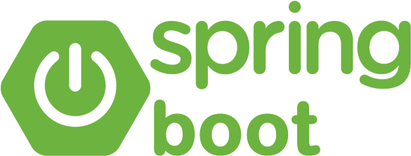
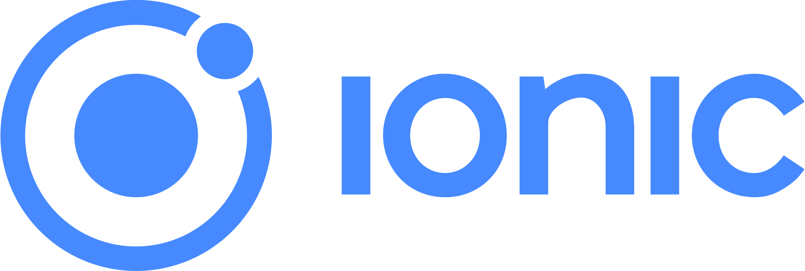

0 Projetos completos
Sobre
Sobre mim
Sou Desenvolvedor Full Stack Sênior, com mais de 15 anos criando, mantendo e evoluindo sistemas web para ambientes de negócio exigentes.
Trabalho com Java, PHP, JavaScript/TypeScript, Angular, bancos relacionais e infraestrutura moderna. Minha atuação combina desenvolvimento, arquitetura, cloud, automação e boas práticas de entrega para construir soluções robustas, seguras e fáceis de sustentar.
- Email: elizeumedeiros@gmail.com
- Celular: +55 (21) 98131-7763
Stack principal
Tecnologias que uso para construir soluções completas



Formação
2009-2013
Tecnologia em Analise e Desenvolvimento de Sistemas
Faculdades Integradas Simonsen
2024-2025
Cloud Computing
Faculdades Unopar
2024-2025
Arquitetura de Software
Faculdades Unopar
Experiências
06/2023 - 03/2025
Java | Quarkus | Angular | Git | REST APIs | Jenkins | Docker | Kubernetes
Analista de Sistemas e Desenvolvimento III
Coopersystem (alocado em projeto do Banco do Brasil)
Atuação como Analista de Sistemas e Desenvolvimento nível III, contribuindo com
projetos estratégicos do setor bancário por meio da Coopersystem, em ambiente de
alta complexidade e missão crítica.
Responsável por análise, desenvolvimento e manutenção de sistemas corporativos, com
foco em performance, escalabilidade, segurança e boas práticas de engenharia de
software.
🔹 Principais atividades:
- Levantamento e análise de requisitos técnicos e funcionais com áreas de negócio;
- Desenvolvimento e sustentação de aplicações corporativas de grande porte;
- Aplicação de versionamento de código, integração contínua e testes automatizados;
-
Apoio na definição de arquitetura e participação em decisões técnicas;
- Atuação colaborativa em squads ágeis, utilizando frameworks como Scrum e Kanban;
Java | Quarkus | Angular | Git | REST APIs | Jenkins | Docker | Kubernetes
06/2023 - 03/2025
Desenvolvedor Full Stack
Yevo - Gestão de Desempenho mais eficiente!
Como Desenvolvedor Full-Stack Sênior, tenho um papel fundamental na criação e
manutenção de interfaces para uma plataforma completa de Gestão de RH e Desempenho.
Trabalho de forma colaborativa em reuniões com equipes internas e externas para
planejar e implementar soluções inovadoras que atendam às necessidades do negócio. A
plataforma oferece uma ampla gama de recursos, como Planos de Desenvolvimento
Individual (PDI), Feedback contínuo, Definição de Metas e a Matriz Nine Box, entre
outros.
Minha abordagem técnica envolve o uso do framework Laravel para o backend e Angular
com Material Design para o frontend, sempre seguindo as melhores práticas de
desenvolvimento para garantir um sistema eficiente e escalável. Sou responsável pelo
gerenciamento do deploy em ambientes de homologação e produção, utilizando GitHub
com a metodologia Git Flow e Jenkins para garantir uma integração contínua (CI) e
entrega contínua (CD) de qualidade.
Além disso, exerço um papel de liderança no gerenciamento de projetos hospedados na
Digital Ocean, utilizando tecnologias como Docker, containers e banco de dados,
assegurando uma infraestrutura robusta e confiável. Mantenho-me constantemente
atualizado com as tecnologias e melhores práticas do mercado, sempre em busca de
oportunidades para otimizar processos e aprimorar a qualidade do produto final.
Competências: Docker · Tailwind CSS · Jenkins · Microsoft Windows · Laravel ·
Programação (computação) · Raciocínio lógico · Desenvolvimento orientado a testes ·
Angular · PaaS (Plataforma como serviço) · Realização de testes · Desenvolvimento de
soluções · Trabalho em equipe · Angular Material · DevOps · XML · Soluções
tecnológicas · Integração e entrega contínuas (CI/CD) · Documentação ·
Desenvolvimento de software · Filas · Kanban · Digital Ocean · Linux · API de Web
Services
2021 - 2022
Desenvolvedor Full Stack
ITWS - It web solutions
Como um desenvolvedor Full Stack com uma sólida experiência no framework Yii2,
utilizei um conjunto abrangente de
tecnologias que incluíam PHP, MySQL, JQuery, CSS, API, SOAP, JSON e XML, entre
outras.
Ao longo da minha carreira, desempenhei um papel fundamental em uma variedade de
projetos de grande escala,
incluindo sistemas SAF, ERP (nas áreas de Manufatura, Financeiro, Materiais,
E-commerce, entre outros),
sempre seguindo as metodologias ágeis Scrum e XP.
Além da minha expertise técnica, estabeleci relacionamentos colaborativos com
gerentes de projetos e diretores de
diversas áreas, garantindo uma comunicação eficaz e alinhamento estratégico em todos
os projetos.
Minha atuação também se estendeu ao suporte técnico, onde respondi prontamente a
chamados de clientes por meio do
sistema de Help Desk da empresa, resolvendo uma ampla gama de problemas de forma
eficiente e satisfatória.
Fui reconhecido pela minha capacidade de liderança técnica e pela minha disposição
em compartilhar conhecimento,
frequentemente auxiliando colegas de equipe na resolução de desafios técnicos e no
desenvolvimento de suas habilidades.
Estive comprometido em manter-me atualizado com as últimas tendências e tecnologias
do setor, buscando constantemente
oportunidades para aprimorar minhas habilidades e contribuir de forma significativa
para o sucesso da equipe e da
organização.
2021 - 2021
Desenvolvedor Full Stack
Abc Thech - USA
Como parte de minhas responsabilidades, fui encarregado da análise, desenvolvimento
e manutenção de sistemas legados no ambiente
Scriptcase, utilizando um conjunto abrangente de tecnologias, incluindo PHP, MySQL,
JQuery, CSS, JSON, XML, entre outras.
Meu foco principal era garantir a funcionalidade contínua e aprimorada desses
sistemas, ao mesmo tempo em que buscava
oportunidades para modernizar e otimizar sua arquitetura e desempenho.
Trabalhando em conformidade com a metodologia ágil Scrum, minha equipe realizava
reuniões diárias para revisar e alinhar as
atividades realizadas no dia anterior, identificar possíveis impedimentos e
colaborar na resolução de problemas de forma eficiente.
Estabelecemos uma cultura de colaboração e apoio mútuo, onde qualquer membro da
equipe poderia contar com o suporte necessário
para superar desafios e concluir suas tarefas com sucesso.
Além do meu compromisso com a excelência técnica, mantive-me atualizado com as
melhores práticas do setor e busquei constantemente
oportunidades para aprimorar minhas habilidades e conhecimentos, garantindo assim
minha capacidade de oferecer soluções eficazes e
inovadoras para os sistemas que mantive.
Competências: CSS · jQuery · Serviços RESTful · MySQL · Linux · Estoque ·
Realização de testes · Desenvolvimento de soluções
· Microsoft Windows · Trabalho em equipe · Git · Angular · Amazon Web Services ·
Laravel · XML · ERP
(Planejamento de recursos empresariais) · Programação (computação) · Soluções
tecnológicas · PHP · HTML ·
Integração e entrega contínuas (CI/CD) · Documentação · Raciocínio lógico · LAMP ·
Desenvolvimento de software · Kanban
2019 - 2021
Desenvolvedor Full Stack
Projetos Freela
Atuando como desenvolvedor de sistemas, prestei serviços de desenvolvimento com foco
em diversos relatórios,
layouts (utilizando o dashboard AdminLTE), e funcionalidades. Utilizei linguagens e
tecnologias como PHP, com a
framework Codeigniter seguindo o padrão MVC, JavaScript (JQuery, Ajax), MySQL,
HTML5, CSS3 e Bootstrap.
Durante esses projetos, assumi a responsabilidade pela análise, desenvolvimento e
implementação de sistemas que
atendessem às necessidades específicas dos clientes. Utilizei metodologias ágeis
para gerenciar eficientemente o
ciclo de vida do projeto, garantindo entregas pontuais e de alta qualidade.
Mantive-me atualizado com as últimas tendências e melhores práticas de
desenvolvimento de software, assegurando que
os sistemas desenvolvidos fossem escaláveis, seguros e de fácil manutenção. Meu foco
na experiência do usuário e na
eficiência operacional resultou em sistemas altamente funcionais e intuitivos, que
satisfizeram as expectativas dos
clientes e agregaram valor aos seus negócios.
Competências: CSS · Docker · jQuery · Serviços RESTful · MySQL · Linux ·
Estoque · Desenvolvimento de soluções
· Microsoft Windows · Trabalho em equipe · Git · AngularJS · Amazon Web Services ·
Laravel · CodeIgniter · XML ·
ERP (Planejamento de recursos empresariais) · Programação (computação) · Soluções
tecnológicas · PHP · HTML ·
Documentação · Raciocínio lógico · LAMP · Desenvolvimento de software · Kanban
2015 - 2018
Design Gráfico e Web Design
M&A Gráfica
Como arte-finalista e produtor gráfico especializado em pré-impressão e impressão,
concentrei-me em projetos de comunicação visual, design editorial e gestão de marca.
Minhas habilidades incluem a criação de logotipos, cartazes, panfletos, cartões de
visitas, folders, papelaria completa, entre outros.
Além disso, realizei o fechamento de arquivos em PDF para fotolito ou CTP,
garantindo a precisão e qualidade dos materiais impressos. Também fui responsável
pela criação e desenvolvimento de sites, utilizando HTML, PHP, Joomla e WordPress.
Meu conhecimento em frameworks como CodeIgniter, Laravel e Ionic me permitiu criar
soluções web robustas e dinâmicas, atendendo às necessidades dos clientes de forma
eficaz.
Com uma abordagem centrada no cliente e atenção aos detalhes, busquei sempre superar
as expectativas, entregando projetos de alta qualidade e impacto visual. Minha
paixão pelo design e compromisso com a excelência resultaram em soluções criativas e
eficientes que ajudaram a fortalecer a presença de marca dos clientes e impulsionar
seus objetivos comerciais.
2014 - 2015
Gerente
Odonto Company - Cabo Frio
Durante minha gestão na empresa, liderei tanto as operações quanto as atividades
administrativas, garantindo o bom funcionamento de todos os processos. Além disso,
fui responsável pelo treinamento dos funcionários no sistema da franquia,
proporcionando-lhes as habilidades necessárias para desempenhar suas funções de
forma eficaz.
Mantive um alto padrão no atendimento aos fornecedores e clientes, garantindo
relações profissionais sólidas e positivas. Além das minhas responsabilidades
gerenciais, cuidei de toda a infraestrutura de informática da empresa, incluindo
servidores, redes, câmeras de segurança, sistemas de alarme e central telefônica
(PABX).
Minha abordagem proativa e focada em soluções garantiu que todos os sistemas e
equipamentos funcionassem de forma eficiente e segura, contribuindo para o sucesso
geral da empresa e a satisfação dos clientes e colaboradores.
2012 - 2014
Analista Desenvolvedor
Faculdade Internacional Signorelli
Fui responsável pela análise, desenvolvimento e manutenção de sistemas para Web,
incluindo uma plataforma de Ensino a Distância baseada em PHP, bem como sistemas
Desktop desenvolvidos em Delphi, como o Prisma - FIJ, FISIG e CISIG.
Na plataforma de Ensino a Distância, utilizei minha expertise em PHP para criar uma
experiência educacional dinâmica e eficiente. Além disso, desenvolvi um sistema
Desktop robusto e confiável para gerenciar as operações internas da empresa,
incluindo o Prisma - FIJ, FISIG e CISIG.
Como parte de minhas responsabilidades, desenvolvi e mantive um sistema de intranet
para a empresa, onde os funcionários tinham acesso a uma variedade de ferramentas,
incluindo um sistema de Helpdesk, todos desenvolvidos em PHP, JQuery, CSS e MySQL.
Além disso, assumi a administração do servidor dedicado, gerenciando todas as suas
funcionalidades e fornecendo suporte ao departamento de Marketing para o
desenvolvimento de novos aplicativos.
Como parte do processo de gerenciamento de infraestrutura, realizei backups diários
de dez bases de dados diferentes e
restaurei nos servidores de homologação e produção, garantindo a integridade e
disponibilidade dos dados.
Além disso, desenvolvi relatórios e consultas diversas para atender às necessidades
operacionais e estratégicas da
empresa.
Estive comprometido em manter-me atualizado com as últimas tecnologias e práticas do
setor, buscando constantemente
maneiras de otimizar processos e melhorar a qualidade dos sistemas que desenvolvi e
mantive.
Competências: CSS · jQuery · Serviços RESTful · MySQL · Linux ·
Desenvolvimento de soluções · Microsoft Windows · Trabalho em equipe · Git · XML ·
Programação (computação) · Soluções tecnológicas · SQL · PHP · HTML · Documentação ·
Raciocínio lógico · LAMP · Desenvolvimento de software
Skills
PHP
100%
MySQL
100%
HTML
100%
JavaScript
95%
Bootstrap
95%
CSS
85%
Docker
100
%
Angular
95%
Ionic
90%
Laravel
CodeIgniter 3 e 4
Yii 2 Framework
HTML5
Sping Boot
Quarkus
TypeScripty
JQuery
Estou disponível para novos projetos
Atendo projetos sob demanda, contratos PJ e parcerias para evolução de sistemas web, integrações e arquitetura.
Contato
Entre em contato
Escolha o canal mais prático para conversarmos sobre projetos, contratos ou oportunidades.
Endereço
Araruama - Rio de Janeiro - RJ